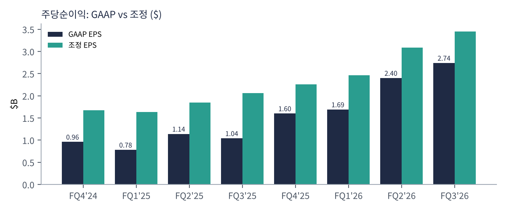

아날로그 디바이시스(ADI)는 산업·자동차·통신·가전·데이터센터용 아날로그·혼합신호 반도체를 만드는 회사다. FQ3 매출이 +40%로 가속하고 조정 영업이익률이 50%인 고마진 회사지만, PER 47배와 순차입 약 $68억이 확인 지점인 회사다.
| 항목 | 내용 |
|---|---|
| 종목 | Analog Devices (ADI) · NASDAQ · 아날로그·혼합신호 반도체 · 매사추세츠 윌밍턴 |
| 멀티플 | PER 47.2배(TTM, GAAP) · P/S 14.41배 (11/13 종가 $397.97) |
| 최근 분기(FQ3'26) | 매출 $40.2억(+40%), GAAP EPS $2.74, 조정 EPS $3.45, 조정 영업이익률 50.0% |
| 가이던스(FQ4'26) | 매출 $43억±1억, 조정 영업이익률 52%±1%p, 조정 EPS $3.86±0.15 |
| 현금·부채 | 스캐너: 현금 $23.2억, 총차입금 $91.2억, TTM 잉여현금 $49.4억 |
| 직책 | 인물 | 역할·특징 |
|---|---|---|
| 회장·CEO | 빈센트 로시(Vincent Roche) | 혁신·고객 협업·제조 민첩성으로 AI 시대 리더십을 강조 |
| CFO | 리처드 푸치오(Richard Puccio) | 수요가 전 제품군·지역에서 강해졌다며 4분기 사상 최대 가이던스를 제시 |
경영 스타일: '고객과 깊이 협업하고 제조 민첩성으로 공급을 맞춘다'. FQ3에 배당·자사주 매입으로 $17억을 돌려줬고(분기 배당 $1.10/주), Empower Semiconductor 인수 관련 비용을 조정 항목에서 제외한다.
센서·신호 변환·전력 관리 제품을 산업·데이터센터 등에 공급한다(회사 설명 요약).
CEO는 혁신·고객 협업·제조 민첩성을 AI 시대의 차별점으로 제시했다.
다음 실적발표(FQ4'26)는 세 가지 질문에 답하는 자리다.
질문 1. 매출이 가이던스($43억 ±1억)를 넘는가?
| 확인할 숫자 | 좋아지면 | 나빠지면 |
|---|---|---|
| FQ4 매출 $43억±1억, 조정 EPS $3.86±0.15, 조정 영업이익률 52%±1%p(FQ3 50.0%) | 상단이면 ②매출 고리가 유지된다 | 하단 미달이면 수요 둔화 신호다 |
질문 2. FY2027 첫 분기 전망이 이 기세를 잇는가?
| 확인할 숫자 | 좋아지면 | 나빠지면 |
|---|---|---|
| CFO는 'FY2027로 기세를 이어가겠다'고 설명, FQ4 가이던스 $43억(내 가정: 기준선) | FQ1 가이던스가 $43억 이상이면 성장 고리가 이어진다 | 아래이면 FQ4가 정점일 수 있다 |
질문 3. 데이터센터·산업 수요가 넓게 유지되는가?
| 확인할 숫자 | 좋아지면 | 나빠지면 |
|---|---|---|
| FQ3 성장은 데이터센터·산업이 주도, 회사는 전 제품군·지역에서 수요가 강해졌다고 설명 | 확인되면 ①수요 고리가 넓다 | 특정 시장 의존이 보이면 변동 위험이 커진다 |
한 줄 판정 규칙: 첫 질문이 가이던스 이상이면 약한 고리(경기 순환성)가 완화되고, 조정 영업이익률이 내려가면 이익 고리의 근거가 약해진다.
일정: 2026-11-24 예정(트레이딩뷰 일정, 회사 확정 확인 필요).
| 분기 | 매출 | 순이익 | EPS | 조정 EPS | 특이 사항 |
|---|---|---|---|---|---|
| FQ4'24(24.11) | $24.4억 | $4.8억 | 0.96 | 1.67 | |
| FQ1'25(25.2) | $24.2억 | $3.9억 | 0.78 | 1.63 | |
| FQ2'25(25.5) | $26.4억 | $5.7억 | 1.14 | 1.85 | |
| FQ3'25(25.8) | $28.8억 | $5.2억 | 1.04 | 2.06 | |
| FQ4'25(25.11) | $30.8억 | $7.9억 | 1.60 | 2.26 | |
| FQ1'26(26.2) | $31.6억 | $8.3억 | 1.69 | 2.46 | |
| FQ2'26(26.5) | $36.2억 | $11.8억 | 2.40 | 3.09 | |
| FQ3'26(26.8) | $40.2억 | $13.4억 | 2.74 | 3.45 | FQ3 매출 +40%(전년비), 조정 EPS +68% |


값은 트레이딩뷰 스캐너 분기 이력이다(회계연도 기준 분기). 조정 EPS는 트레이딩뷰 Reported(비GAAP)다(FQ3'25 값 $2.06은 회사 발표 $2.05와 1센트 차이). 분기 설비투자는 구하지 못했다(TTM $6.1억만 확인).
흐름 요약: 매출은 FQ4'24 $24.4억에서 FQ3'26 $40.2억으로 늘었다. 조정 EPS는 $1.67에서 $3.45로 올랐다.
| 항목 | 값 | 비고 |
|---|---|---|
| FQ3 매출 | $40.2억 | 전년 $28.8억(+40%), 데이터센터·산업 주도 |
| FQ3 총이익률 | GAAP 67.3% / 조정 72.5% | 전년 GAAP 62.1% / 조정 69.2% |
| FQ3 조정 영업이익률 | 50.0% | 전년 42.2% |
| FQ4 가이던스 | $43억±1억 | 조정 영업이익률 52%±1%p |
시장별 매출 비중(산업·자동차·통신·가전·데이터센터) 표는 이번에 구하지 못했다. 회사는 FQ3 성장을 데이터센터와 산업이 이끌었다고 밝혔다.
ADI는 'AI 시대에 아날로그·전력 기술로 고객 가치를 만드는 것'을 목표로 한다.
| 축 | 최근 움직임 |
|---|---|
| 성장 | FQ4 사상 최대 가이던스, FY2027로 기세 이어가기(CFO) |
| 수익성 | 조정 영업이익률 50% → FQ4 52% 가이던스 |
| 현금 환원 | TTM 배당 $20.4억·자사주 $31.3억 |

| 이동평균 | 값 | 종가 대비 | 해석 |
|---|---|---|---|
| 5일선 | $400.86 | -0.7% | 현재가가 아래 |
| 20일선 | $402.69 | -1.2% | 현재가가 아래 |
| 50일선 | $394.80 | +0.8% | 현재가가 위 |
| 100일선 | $386.64 | +2.9% | 현재가가 위 |
| 200일선 | $376.66 | +5.7% | 현재가가 위 (+6%) |
주봉 흐름: 52주 고점 $445.91(6/22), 52주 저점 $224.25(11/20). 현재가 $397.97는 200일선 $376.66보다 위, 50일선 $394.80보다 위에 있다.
| 규칙 | 기준 | 현재 값 | 신호 |
|---|---|---|---|
| 장기 추세 필터 | 종가 vs 200일선 | $397.97 > $376.66 | 매수 |
| 중장기 교차 | 50일선 vs 200일선 | $394.80 > $376.66 | 매수 |
| 단기 교차 | 20일선 vs 50일선 | $402.69 > $394.80 | 매수 |
| 돈키언 채널 | 55일 고가 $433.72 / 저가 $348.00 | 중간값 $390.86 위 | 매수 |
| 1개월 모멘텀 | 21거래일 수익률 | -1.5% (기준 $403.95) | 매도 |
| 3개월 모멘텀 | 63거래일 수익률 | +2.0% (기준 $390.28) | 매수 |
| 6개월 모멘텀 | 126거래일 수익률 | -4.7% (기준 $417.49) | 매도 |
| 12개월 모멘텀 | 252거래일 수익률 | +64.8% (기준 $241.44) | 매수 |
| 종합 (8개 평균) | +0.50 | 매수 우위 |
해석: 8개 신호 중 매수 6개, 매도 2개(점수 +0.50, 매수 우위)다. 14일 ATR $21.48 (5.4%).
| 가격·조건 | 무엇이 바뀌나 | 의미 |
|---|---|---|
| $403.95 돌파 | 1개월 기준가 | 매도 → 매수 |
| $417.49 돌파 | 6개월 기준가 | 매도 → 매수 |
| $376.66 돌파 | 200일선 | 이탈하면 매수 → 매도 |
| 50일선이 200일선 위로 | 50/200 교차 | 이탈하면 매수 → 매도 |
| 20일선이 50일선 위로 | 20/50 교차 | 이탈하면 매수 → 매도 |
| 구분 | 가격대 | 근거 |
|---|---|---|
| 저항 1 | $400.86 | 5일선 |
| 저항 2 | $402.69 | 20일선 |
| 지지 1 | $394.80 | 50일선 |
| 지지 2 | $386.64 | 100일선 |
점수는 +0.50(매수 우위)다. 14일 ATR은 $21.48로 현재가의 5.4%다. 가까운 저항 $400.86을 종가로 넘는지와 가까운 지지 $394.80를 지키는지가 신호 전환의 기준이다. (내 가정, 매매 권유 아님)
| 악재 요인 | 내용 | 강도 |
|---|---|---|
| 경기 순환 | 산업·자동차 등 전방 수요가 꺾이는 경우(일반 업종 위험, 회사 공시의 위험요인은 이번에 확인하지 못함) | 중간 |
| 기저효과 | TTM EPS +114%는 낮은 직전 기준 효과가 큼. 성장 지속 여부 확인 필요 | 중간 |
| 차입금 | 총차입금 $91.2억, EBITDA 대비 약 1.3배(내 계산) | 낮음 |
| 인수·통합 | Empower Semiconductor 인수 관련 비용을 조정 항목에서 제외 | 낮음 |
| 밸류에이션 | PER 47배(GAAP), 조정 35배, P/S 14.4배 | 중간 |
| 티커 | 회사 | PER(TTM) | PEG | P/S | EPS 성장(YoY) |
|---|---|---|---|---|---|
| ADI | 아날로그 디바이시스 | 47.2배 | 0.42 | 14.41배 | +114% |
| TXN | 텍사스 인스트루먼트 | 39.4배 | 1.00 | 13.86배 | +41% |
| NXPI | NXP | 20.8배 | 0.37 | 4.92배 | +57% |
| ON | 온세미 | 41.4배 | 0.35 | 4.60배 | +124% |
| MCHP | 마이크로칩 | 46.7배 | – | 6.10배 | – |
| MPWR | 모놀리식 파워 | 76.8배 | – | 19.04배 | -54% |
ADI 첫 행은 스캐너 값이다. 조정 PEG는 약 0.63(내 계산)다. ON의 PEG 0.35는 저기저 효과가 커서 조정 기준은 약 2.5다. MCHP·MPWR은 PEG가 산출되지 않았다.
ADI는 현금 $23.2억에 총차입금 $91.2억이라 순차입 약 $68.0억이지만, TTM 잉여현금이 $49.4억이고 차입금이 EBITDA의 1.3배 수준이다. FQ3 영업현금은 $16.0억이다.
| 지표 | 값 | 계산·출처 | 해석 |
|---|---|---|---|
| 현금 | $23.2억 | 스캐너 | |
| 총차입금 | $91.2억 | 스캐너 | 순차입 약 $68.0억(내 계산) |
| TTM 잉여현금흐름 | $49.4억 | 스캐너 | TTM 매출 $138.8억 대비 약 35.6%(내 계산), 회사 발표 36% |
| TTM EBITDA | $69.5억 | 스캐너 | TTM 매출 대비 약 50.1%, 차입금÷EBITDA 약 1.3배(내 계산) |
| 기준 | 값 | 비고 |
|---|---|---|
| P/S (TTM) | 14.41배 | 스캐너 |
| 동종 | TXN 13.9, NXPI 4.9, MCHP 6.1, MPWR 19.0, ON 4.6 | 11/13 스캐너 |
해석: P/S 14.4배는 아날로그 동종 중 TXN(13.9배)과 비슷하고 NXPI·MCHP·ON보다 높다. 총이익률(TTM 60.4%)과 잉여현금 마진(약 36%)이 높은 쪽이 배경으로 보인다(내 해석).
| 지표 | 값 | 판정 |
|---|---|---|
| PER (GAAP TTM) | 47.2배 | 스캐너 |
| PER (조정 TTM) | 약 35.3배 | $397.97 ÷ 최근 4분기 조정 EPS $11.26(내 계산) |
| TTM 잉여현금 마진 | 약 35.6% | $49.4억 ÷ 매출 $138.8억(내 계산) |
| EBITDA 마진 | 약 50.1% | $69.5억 ÷ $138.8억(내 계산) |
| 방식 | PER | EPS 성장률 | PEG | 판정 |
|---|---|---|---|---|
| 트레이딩뷰 (GAAP TTM) | 47.2배 | +114.4% | 0.42 | 0.5 이하 구간 |
| 조정 EPS (내 계산) | 35.3배 | +56.2% | 약 0.63 | 최근 4분기 $11.26 ÷ 직전 4분기 $7.21 |
판정: PEG 0.42(스캐너)는 0.5 이하, 조정 기준 약 0.63은 1.0 이하라 두 방식 모두 투자 적격(≤1.0) 구간이다.직전 4분기 EPS가 낮아 성장률이 큰 기저효과가 있다. 앞으로는 FQ4 가이던스(조정 EPS $3.86, 전년 $2.26 대비 약 +71%, 내 계산)가 확인 지점이다.

ADI의 사이클은 고객 수요 → 매출 → 이익·현금 → 제조·R&D·환원 → 확장이다. 번 현금으로 제조와 R&D에 투자하고 일부를 돌려주며 인수로 제품을 넓힌다.
| 고리 | 현재 숫자 | 고리 강도 | 약해지는 신호 |
|---|---|---|---|
| ① 고객 수요 | 데이터센터·산업 주도, 전 제품군 강세 | 강함 | 경기 순환(산업·자동차) |
| ② 매출 | FQ3 $40.2억(+40%), FQ4 $43억 가이던스 | 강함 | 기저효과 뒤 성장 둔화 가능 |
| ③ 이익·현금 | 조정 영업이익률 50.0%, TTM 잉여현금 $49.4억 | 강함 | GAAP·조정 차이(인수 관련 비용) |
| ④ 제조·R&D·환원 | TTM 설비투자 $6.1억, 배당·자사주 $51.7억 | 보통 | 총차입금 $91.2억 유지 |
| ⑤ 확장 | Empower Semiconductor 인수, AI 시대 제품 | 보통 | 인수 통합 비용 |
구조: ①②③이 모두 강하다. 약한 곳은 ④로, 현금의 상당 부분이 환원으로 나가고 총차입금이 $91.2억 있다. 수요가 꺾이면 환원 규모를 유지하기 어려워질 수 있다(내 해석).